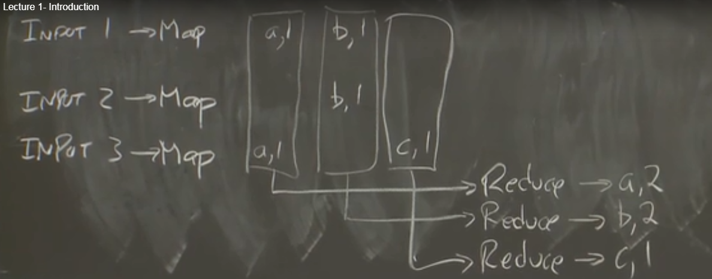
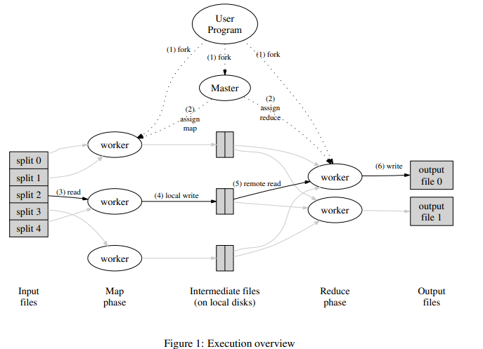

6.824 Lab 1: MapReduce
Lab1花了三天时间，一些小细节不注意，在一些细节处出了许多问题，一点点的debug还是给解了，虽然完成的很慢，但做出来的那一刻还是很开心的，终于pass all了。
注意：这篇文章不是为了记录解题思路，还是得遵从老师的意思。当然如果你正在解题，没有人交流的话，你可以选择两个，第一，在B站的该课程视频评论下，找到slack链接，加入进去；第二，联系我，我也会尽量帮助你理解这道实验题。
一、理解
第一堂课的大部分内容来自：MapReduce (2004)。对于我来说，听课的困难已经有点大了，阅读原文我第一想到的是有没有，翻译。刚好，这是有的。Google MapReduce中文版。我的很多知识点均来自于这篇博客，若是理解了这篇博客，这个实验也就不难理解了。
论文是必须要认真读的，可以去很好的理解MapReduce。
维基百科对MapReduce的定义：
MapReduce是Google提出的一个软件架构，用于大规模数据集（大于1TB）的并行运算。概念“Map（映射）”和“Reduce（归纳）”，及他们的主要思想，都是从函数式编程语言借来的，还有从矢量编程语言借来的特性。[1]
当前的软件实现是指定一个*Map（映射）函数，用来把一组键值对映射成一组新的键值对，指定并发的Reduce（归纳）*函数，用来保证所有映射的键值对中的每一个共享相同的键组。
将其大意转换为表格，即为：
| map | (k1, v1) | → list(k2, v2) |
|---|---|---|
| reduce | (k2, list(v2)) | → list(v2) |
表格难理解，则可以转化为图片，即：将一个输出通过map映射处理后，（按key，或一致性hash等操作）分配给不同的reduce，让reduce进行并发的归纳。

二、更多例子
这里例举了一些有趣的程序，它们都可以很轻松的用MapReduce模型表达。
**分布式Grep：**map函数在匹配到给定的pattern时输出一行。reduce函数只是将给定的中间数据复制到输出上。
**URL访问频次统计：**map函数处理网页请求的日志，对每个URL输出〈URL, 1〉。reduce函数将相同URL的所有值相加并输出〈URL, 总次数〉对。
**倒转Web链接图：**map函数在source页面中针对每个指向target的链接都输出一个〈target, source〉对。reduce函数将与某个给定的target相关联的所有source链接合并为一个列表，并输出〈target, list(source)〉对。
**每个主机的关键词向量：**关键词向量是对出现在一个文档或一组文档中的最重要的单词的概要，其形式为〈单词, 频率〉对。map函数针对每个输入文档（其主机名可从文档URL中提取到）输出一个〈主机名, 关键词向量〉对。给定主机的所有文档的关键词向量都被传递给reduce函数。reduce函数将这些关键词向量相加，去掉其中频率最低的关键词，然后输出最终的〈主机名, 关键词向量〉对。
**倒排索引：**map函数解析每个文档，并输出一系列〈单词, 文档ID〉对。reduce函数接受给定单词的所有中间对，将它们按文档ID排序，再输出〈单词, list(文档ID)〉对。所有输出对的集合组成了一个简单的倒排索引。用户可以很轻松的扩展这个过程来跟踪单词的位置。
**分布式排序：**map函数从每条记录中提取出key，并输出〈key, 记录〉对。reduce函数不改变这些中间对，直接输出。
三、具体执行
通过自动将输入数据切分为M块，map调用分布在多台机器上进行。输入划分可以在不同的机器上并行执行。reduce调用是通过一个划分函数（例如hash(key) mod R)将中间key空间划分为R块来分布运行。划分的块数R和划分函数都由用户指定。

图1展示了我们的实现中MapReduce操作的整体流程。当用户程序调用MapReduce函数时，会发生下面一系列动作（图1中的标号与下面列表顺序相同）：
- 1.用户程序首先调用的MapReduce库将输入文件分成M个数据片度，每个数据片段的大小一般从16MB到64MB(可以通过可选的参数来控制每个数据片段的大小)。然后用户程序在机群中创建大量的程序副本。
- 这些程序副本中的有一个特殊的程序–master。副本中其它的程序都是worker程序，由master分配任务。有M个Map任务和R个Reduce任务将被分配，master将一个Map任务或Reduce任务分配给一个空闲的worker。
- 被分配了map任务的worker程序读取相关的输入数据片段，从输入的数据片段中解析出key/value pair，然后把key/value pair传递给用户自定义的Map函数，由Map函数生成并输出的中间key/value pair，并缓存在内存中。
- 缓存中的key/value pair通过分区函数分成R个区域，之后周期性的写入到本地磁盘上。缓存的key/value pair在本地磁盘上的存储位置将被回传给master，由master负责把这些存储位置再传送给Reduce worker。
- 当Reduce worker程序接收到master程序发来的数据存储位置信息后，使用RPC从Map worker所在
主机的磁盘上读取这些缓存数据。当Reduce worker读取了所有的中间数据后，通过对key进行排序后使得具有相同key值的数据聚合在一起。由于许多不同的key值会映射到相同的Reduce任务上，因此必须进行排序。如果中间数据太大无法在内存中完成排序，那么就要在外部进行排序。 - Reduce worker程序遍历排序后的中间数据，对于每一个唯一的中间key值，Reduce worker程序将这个key值和它相关的中间value值的集合传递给用户自定义的Reduce函数。Reduce函数的输出被追加到所属分区的输出文件。
- 当所有的Map和Reduce任务都完成之后，master唤醒用户程序。在这个时候，在用户程序里的对MapReduce调用才返回。
成功完成后，MapReduce执行的输出都在R个输出文件中（每个reduce任务产生一个，文件名由用户指定）。通常用户不需要合并这R个输出文件——他们经常会把这些文件当作另一个MapReduce调用的输入，或是用于另一个可以处理分成多个文件输入的分布式应用。
四、容错
错误在一个系统中，我们应假定其是普遍出现的，所以，系统应实现有一定的容错能力。
worker故障
master周期性的ping每个worker。如果在一个约定的时间范围内没有收到worker返回的信息，master将把这个worker标记为失效。所有由这个失效的worker完成的Map任务被重设为初始的空闲状态，之后这些任务就可以被安排给其他的worker。同样的，worker失效时正在运行的Map或Reduce任务也将被重新置为空闲状态，等待重新调度。
当worker故障时，由于已经完成的Map任务的输出存储在这台机器上，Map任务的输出已不可访问了，因此必须重新执行。而已经完成的Reduce任务的输出存储在全局文件系统上，因此不需要再次执行。
当一个Map任务首先被worker A执行，之后由于worker A失效了又被调度到worker B执行，这个“重新执行”的动作会被通知给所有执行Reduce任务的worker。任何还没有从worker A读取数据的Reduce任务将从worker B读取数据。
MapReduce可以处理大规模worker失效的情况。比如，在一个MapReduce操作执行期间，在正在运行的集群上进行网络维护引起80台机器在几分钟内不可访问了，MapReduce master只需要简单的再次执行那些不可访问的worker完成的工作，之后继续执行未完成的任务，直到最终完成这个MapReduce操作。
master失败
一个简单的解决办法是让master周期性的将上面描述的数据结构的写入磁盘，checkpoint。如果这个master任务失效了，可以从最后一个检查点（checkpoint）开始启动另一个master进程。
存储位置
使用GFS，本地均有备份，直接利用本地磁盘（尽可能的让有本地记录的机器进行本地操作）。
任务粒度
把Map拆分成了M个片段、把Reduce拆分成R个片段执行。理想情况下，M和R应当比集群中worker的机器数量要多得多。
R值通常是由用户指定的，因为每个Reduce任务最终都会生成一个独立的输出文件。实际使用时我们也倾向于选择合适的M值，以使得每一个独立任务都是处理大约16M到64M的输入数据，另外，我们把R值设置为我们想使用的worker机器数量的小的倍数。我们通常会用这样的比例来执行MapReduce：M=200000，R=5000，使用2000台worker机器。
备用任务
影响一个MapReduce的总执行时间最通常的因素是“落伍者”：在运算过程中，如果有一台机器花了很长的时间才完成最后几个Map或Reduce任务，导致MapReduce操作总的执行时间超过预期。
当一个MapReduce操作接近完成的时候，master调度备用（backup）任务进程来执行剩下的、处于处理中状态（in-progress）的任务。无论是最初的执行进程、还是备用（backup）任务进程完成了任务，我们都把这个任务标记成为已经完成。
本文标题：6.824 Lab 1: MapReduce
文章作者：小师
发布时间：2020-03-02
最后更新：2023-02-25
原始链接：chunlife.top/2020/03/02/6-824-Lab-1-MapReduce/
版权声明：本站所有文章均采用知识共享署名4.0国际许可协议进行许可